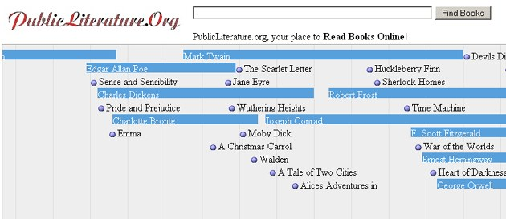

Historicism, New Historicism



Senior Seminar in
Literary Criticism and Theory
Foucault, 1475-1490; (White 1536-1553; Greenblatt, 2150-2161 suggested)
Historicism, New Historicism
10/12/10
Foucault
“I had allowed their names to function ambiguously.”
“I wanted to locate the rules that formed a certain number of concepts and theoretical relationships in their works.”
“as a privileged moment of individualization in the history of ideas, knowledge, and literature, or in the history of phil osophy
and science, the question of the author demands a more direct response. Even now, when we study the history of a concept, a literary genre,
or a branch of philosophy these concerns assume a relatively weak and secondary position in relation to the solid and fundamental role of an author and his works.”
“the singular relationship that holds between an author and a text, the manner in which a text apparently points to this figure who is outside and precedes it.”
FOUCAULT wrote, “Beckett supplies a direction: "What matter who's speaking, someone said, what matter who's speaking."
Writing “is primarily concerned with creating an opening where the writing subject endlessly disappears.”
--- “the kinship between writing and death.”
“This conception of a spoken or written narrative as a protection against death has been transformed by our culture. Writing is now linked to sacrifice and to the sacrifice of life itself; it is a voluntary obliteration of the self that does not require representation in books because it takes place in the everyday existence of the writer. Where a work had the duty of creating immortality, it now attains the right to kill, to become the murderer of its author.”
problem of the work---author must be the one who penned it.
“In this context we can briefly consider the problems that arise in the use of an author's name . What is the name of an author? How does
it function? Far from offering a solution, I will attempt to indicate some of the difficulties related to these questions.”
“Obviously not a pure and simple reference, the proper name (and
the author's name as well) has other than indicative fu nctions. It is more
than a gesture, a finger pointed at someone; it is, to a certain extent, the
equivalent of a description.”
“The proper name and the name of an author oscillate between the poles of description and designation”
“We can conclude that. unlike a proper name, which moves from the interior
of a discourse to the real person outside who produced it, the name of the author remains at the contours of texts-separating one from the other, defining their form, and characterizing their mode of existence. It points to the existence of certain groups of discourse and refers to the status of this discourse within a society and culture....the function of an author is to characterize
the existence, circulation, and operation of certain discourses within
a society.”
objects of appropriation
not universal or constant
complex constructedness